Unofficial study solution; not an official GTU answer key. Answers have not been independently verified. English text reflows; source equations, diagrams and Gujarati retain their original appearance. Use Enlarge image to inspect them.
આ બિનસત્તાવાર અભ્યાસ ઉકેલ છે, સત્તાવાર GTU જવાબવહી નથી. PDF માંથી ગુજરાતી લખાણ સાચું નીકળતું નથી, તેથી દરેક જવાબ મૂળ ચિત્રરૂપે જાળવ્યો છે. વાંચવા માટે ચિત્ર મોટું કરો. મૂળ પ્રશ્ન અને પરીક્ષાના વિકલ્પોની સૂચનાઓ અનુસરો.
Coverage: all five questions and all printed OR alternatives are solved: 28 parts. The original English question is retained in both language views; answers are English and Gujarati.
Printed instructions: attempt all questions; make suitable assumptions; figures on the right indicate full marks; simple and non-programmable scientific calculators are permitted; the English version is authentic.
Assumptions: the nitrogen calculation assumes the unspecified 30% is nitrogen-free; the KNO₃ result is a saturation solubility only if saturated. NTP conventions and reaction-specific normality are stated where used. Diagrams are schematic.
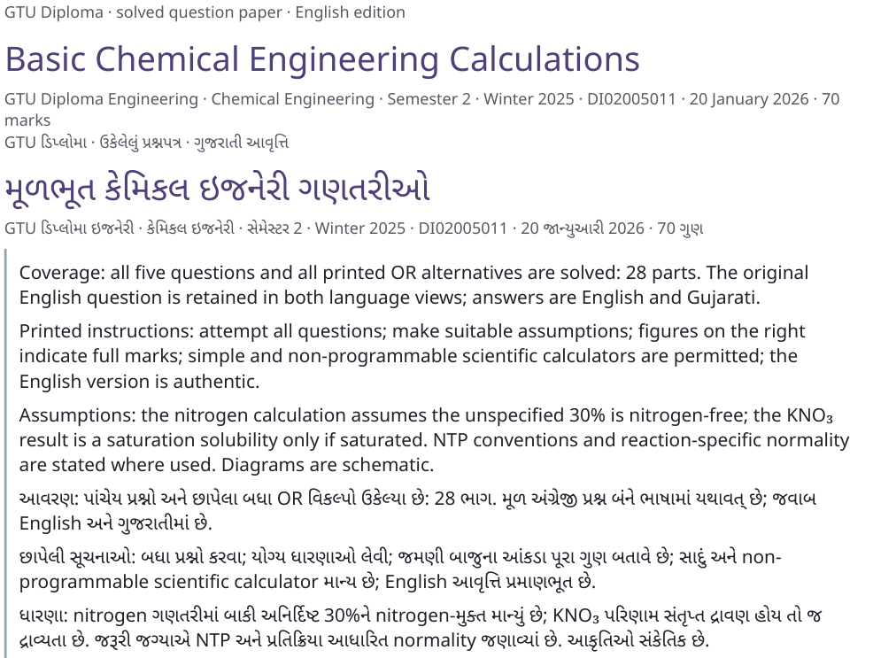
Question 1
Q1 · Units, dimensions and physical quantities
Q.1 (a) · Explain system of unit. · 3 marks
A system of units is an agreed set of base units and the derived units built from them, so measurements are expressed consistently.
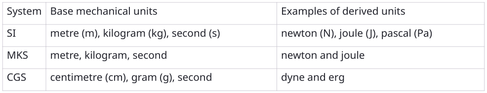
The SI system also has kelvin, ampere, mole and candela as base units. Use a consistent system before substituting in an equation.
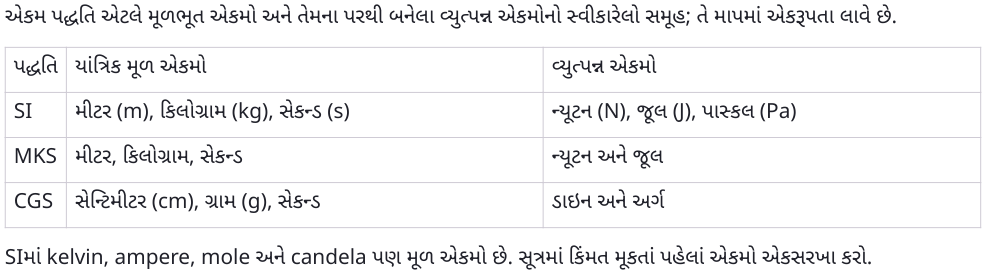
Q.1 (b) · Explain Fundamental Quantities and Derived quantities with three examples of each. · 4 marks
Fundamental quantities are chosen independently; derived quantities are combinations of base quantities.
temperature, electric current, amount and luminous intensity.
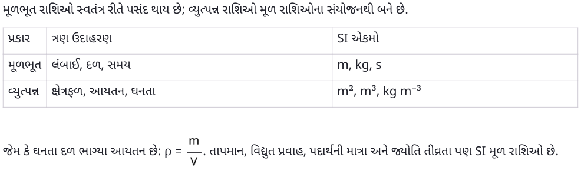
Q.1 (c) · Define: 1) Pressure 2) Force 3) Work 4) Heat 5) Energy 6) Volume 7) Power · 7 marks
2. Force: an interaction that changes momentum; F = ma, SI unit newton (N).
3. Work: energy transferred when a force acts through a displacement; W = F s cos θ, SI unit joule (J).
4. Heat: energy transferred across a boundary because of a temperature difference; SI unit J.
5. Energy: capacity of a system to do work or transfer heat; SI unit J.
6. Volume: three-dimensional space occupied; SI unit m³.
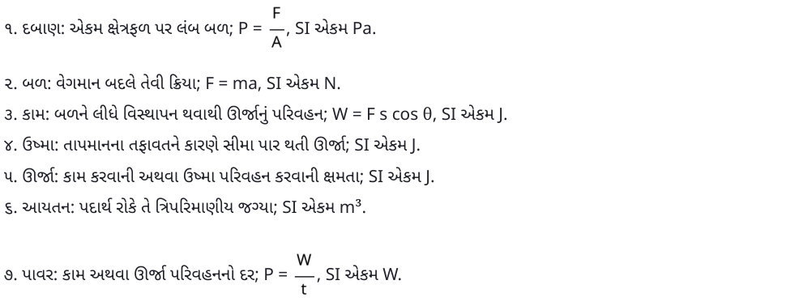
Q.1 (c) · Explain Unit and Dimension and also write importance of basic chemical engineering calculation. · OR · 7 marks
A unit is a chosen standard for a quantity, such as metre or foot for length. A dimension describes its dependence on base quantities, such as [L] for length.
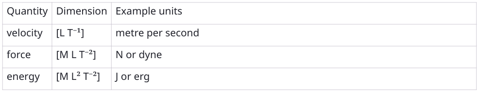
Different units may have the same dimension. A dimensionally consistent equation has matching dimensions on both sides, although that alone does not prove its correctness.
Importance in chemical engineering: unit conversion, material and energy balances, process- equipment sizing, safety and detection of calculation errors.
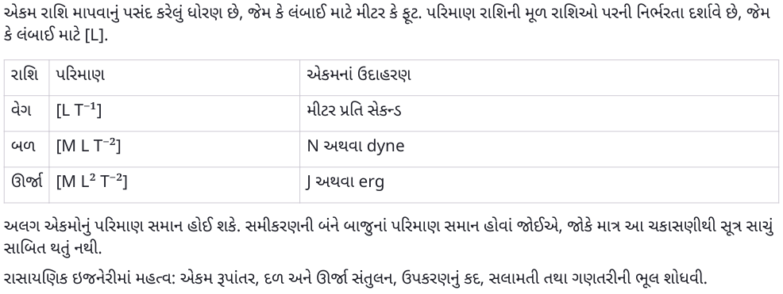
Question 2
Q2 · Fluid properties and mixture calculations
Q.2 (a) · Define: Solubility, Flow rate, Density · 3 marks
Solubility: the maximum amount of solute that dissolves in a specified solvent at equilibrium at a stated temperature and pressure.
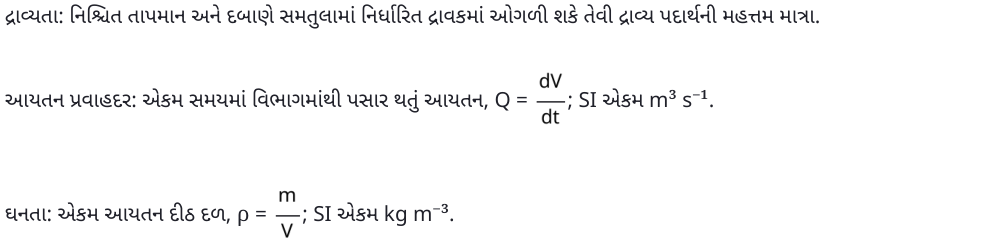
Q.2 (b) · Water flows through a pipe of radius 5 cm at a speed of 2 m/s. Calculate the flow rate in m³/s and in L/min. · 4 marks
Given: radius r = 5 cm = 0.050 m.
Find: volume flow rate in m³ per second and L per minute.
1. Formula — A = πr²; Q = A v.
2. Area — A = π(0.050 m)² = 0.007854 m².
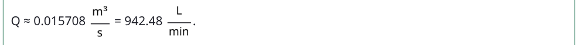
Assume the stated 2 m s⁻¹ is the mean cross-sectional speed. The result is a volumetric, not mass, flow rate.
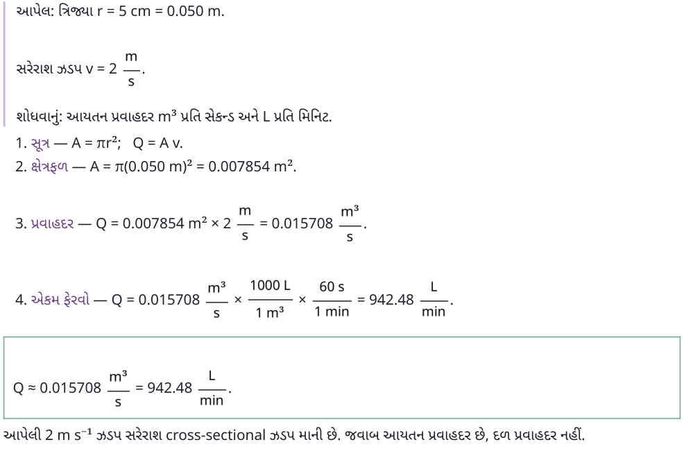
Q.2 (c) · Calculate the available nitrogen content of a solution having 30% NH2CONH2 20% (NH4)2SO4 and 20% NH4NO3 by weight. · 7 marks
Basis: 100 kg solution: 30 kg urea CO(NH₂)₂, 20 kg (NH₄)₂SO₄ and 20 kg NH₄NO₃.
Assume: the unspecified remaining 30 kg contains no nitrogen.
Atomic masses: H = 1, C = 12, N = 14, O = 16, S = 32.
1. Molar masses — Murea = 60; M(NH₄)₂SO₄ = 132; MNH₄NO₃ = 80 kg kmol⁻¹.
5. Total nitrogen — mN = 14.000 + 4.2424 + 7.000 = 25.2424 kg.
Nitrogen content = 25.24% by mass of the solution.
The stated ingredients account for only 70% of the mixture; if the remaining 30% contains nitrogen, the total cannot be determined from the paper alone. This calculates chemical nitrogen content, not a measured agronomic availability.
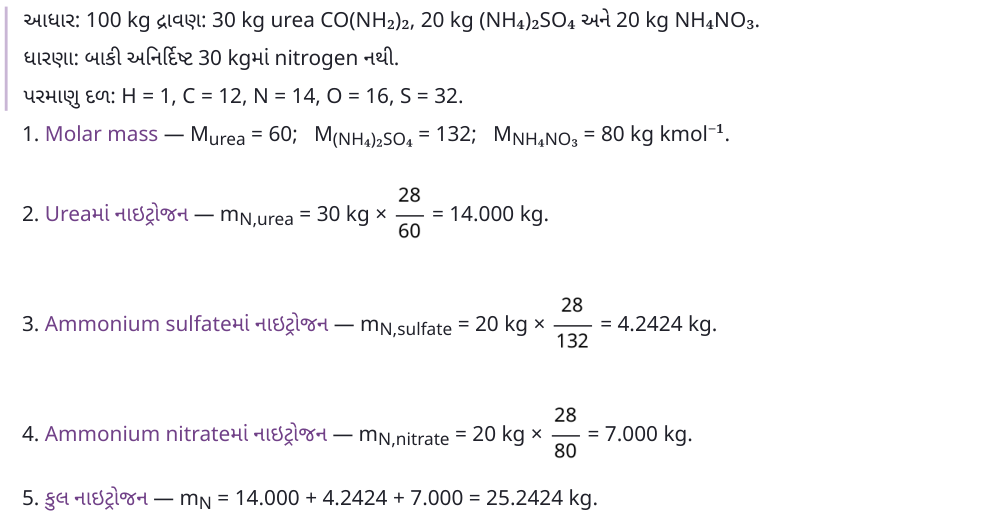
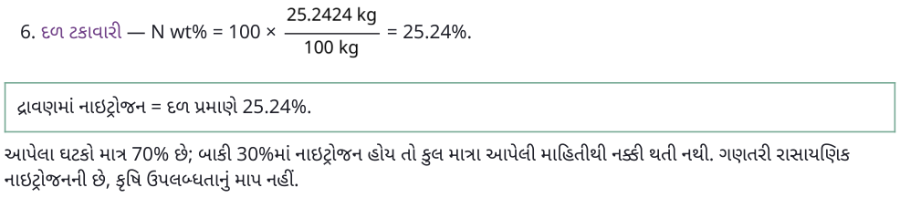
Q.2 (a) · Define: Velocity, Absolute viscosity, kinematic viscosity · OR · 3 marks
SI unit is Pa s.
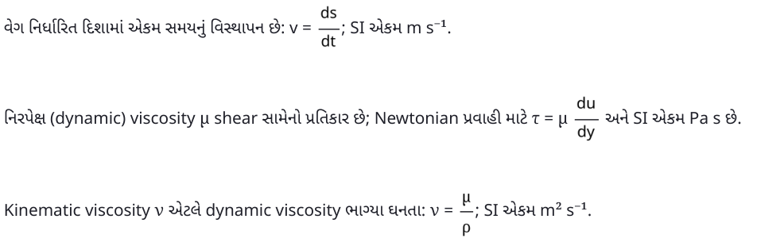
Q.2 (b) · Antoine constants for ethanol in the range 0°C to 78.3°C are: A= 8.11220 B= 1592.864 C= 222.184 Calculate Vapor Pressure of Ethanol at 60°C · OR · 4 marks
Given: ethanol at t = 60 °C; A = 8.11220, B = 1592.864, C = 222.184.
Convention: Antoine log is base 10, t is in °C and P is in mm Hg.
2. Denominator — C + t = 222.184 + 60 = 282.184.
4. Antilog — P = 102.467429 mm Hg = 293.38 mm Hg.
Vapour pressure ≈ 293.38 mm Hg = 39.11 kPa.
The answer uses the constants exactly as supplied and the mm Hg Antoine convention; a different Antoine convention requires different constants.
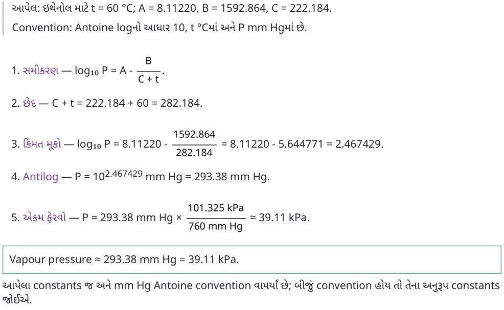
Q.2 (c) · Sodium Chloride weighing 300 kg is mixed with 600 kg potassium chloride. Find the composition of the mixture in weight % and mole% · OR · 7 marks
Given: 300 kg NaCl and 600 kg KCl; total 900 kg.
Use Na = 23, K = 39 and Cl = 35.5, so MNaCl = 58.5 and MKCl = 74.5 kg kmol⁻¹.
4. Total moles — ntotal = 5.12821 + 8.05369 = 13.18190 kmol.
Mass: NaCl 33.33%, KCl 66.67%. Mole: NaCl 38.90%, KCl 61.10%.
Each pair sums to 100%; mole percentages count salt formula units, not separate ions.
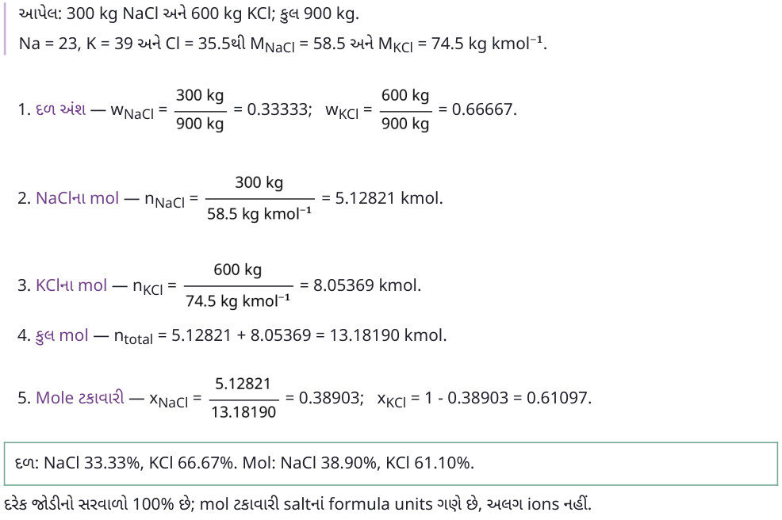
Question 3
Q3 · Solution concentration and chemical quantities
Q.3 (a) · A student dissolves 12 grams of potassium nitrate (KNO₃) in 50 mL of water at 30°C. What is the solubility of KNO₃ in g/100 mL? · 3 marks
Given: 12 g KNO₃ dissolves in 50 mL water at 30 °C.
Find: amount per 100 mL of water.
24 g KNO₃ per 100 mL water, if the solution is saturated.
The question does not say the solution is saturated. The data give 24 g per 100 mL as the prepared amount; the true saturation solubility could be higher.
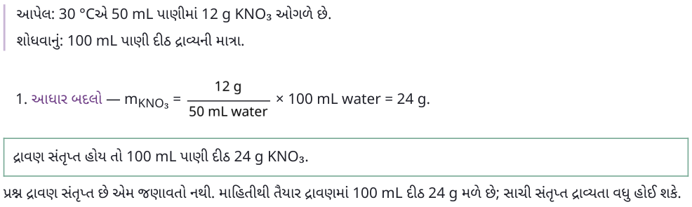
Q.3 (b) · Define: Normality, Molality, Molarity, specific gravity · 4 marks
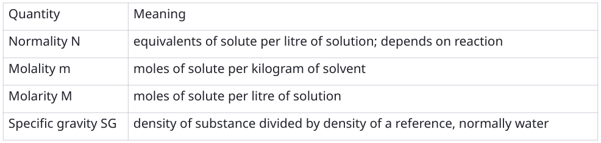
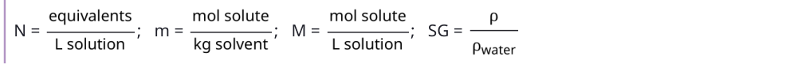
State the temperature for density and solution volume. SG is dimensionless.
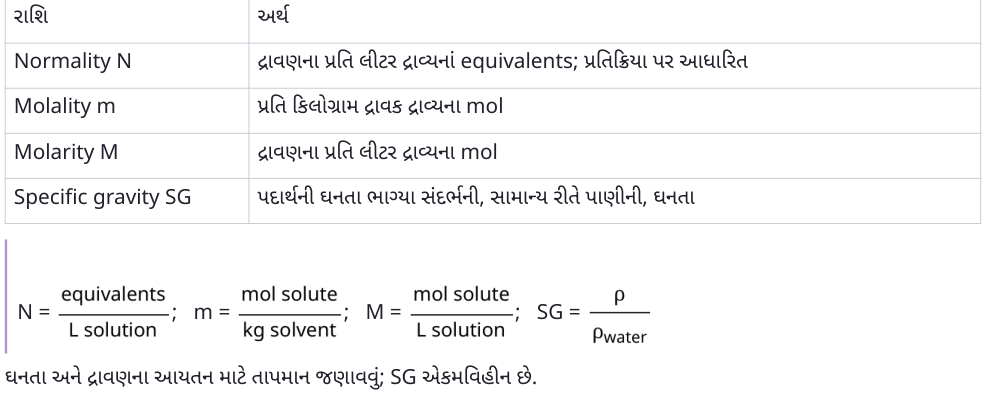
Q.3 (c) · 196 gm of sulphuric acid are dissolve in water to prepare 1000 ml of solution. Find the normality and molarity of the solution. · 7 marks
Given: 196 g H₂SO₄ in 1000 mL = 1.000 L of solution.
MH₂SO₄ = 2(1) + 32 + 4(16) = 98 g mol⁻¹.
Assume: complete acid–base neutralisation, z = 2 equivalents per mole.
4. Normality — N = zM = 2 × 2.000 = 4.000 eq L⁻¹.
Molarity = 2.00 M; normality = 4.00 N (complete neutralisation).
Normality depends on the reaction: if only one proton reacts, the same solution is 2.00 N.
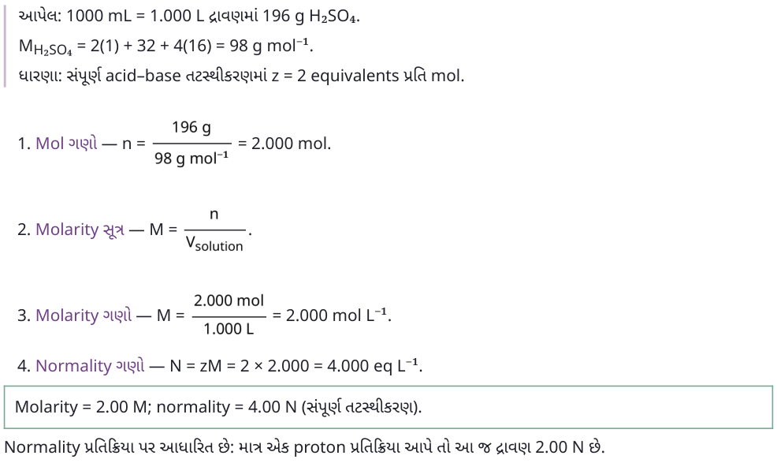
Q.3 (a) · An object is moving with a constant velocity of 25 m/s. How far does it travel in 8 seconds? · OR · 3 marks
1. Formula — s = v t.
Distance travelled = 200 m.
The unit seconds cancels, leaving metres.
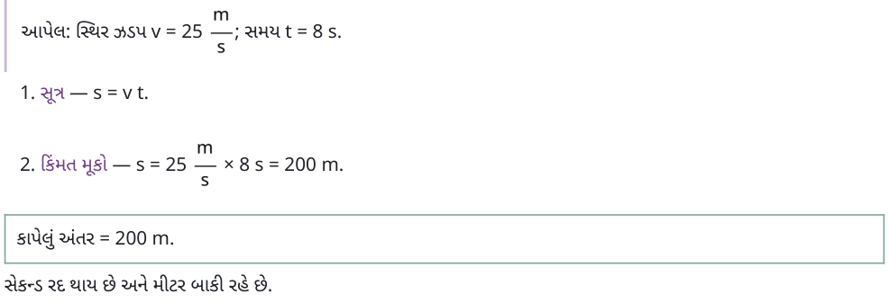
Q.3 (b) · Define : Mole, Atomic weight, Molecular weight, Equivalent weight · OR · 4 marks
Mole: the amount containing exactly 6.02214076 × 10²³ specified entities.
Relative atomic mass Aᵣ: weighted mean mass of atoms relative to one twelfth of a carbon-12 atom; dimensionless.
Relative molecular mass Mᵣ: sum of the relative atomic masses in a molecule; its numerical molar mass is in g mol⁻¹.
depends on the reaction.
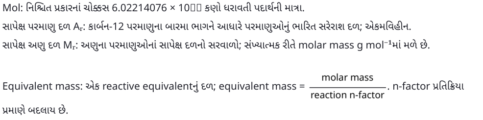
Q.3 (c) · A solution of NaoH contain 20% by weight. The density of the solution is 1.196 kg/ l. Find the normality, molality and molarity of the solution. · OR · 7 marks
Basis: 100 g NaOH solution at 20% by mass: 20 g NaOH and 80 g solvent.
Solution density = 1.196 kg L⁻¹; MNaOH = 40 g mol⁻¹.
Assume: the solvent is water; NaOH supplies one OH⁻ per formula unit in the specified neutralisation.
5. Normality — N = 1 × M = 5.980 eq L⁻¹.
Normality = 5.98 N; molality = 6.25 mol kg⁻¹; molarity = 5.98 M.
The paper spells the formula “NaoH”; it is interpreted as NaOH. Molality uses solvent mass, whereas molarity uses solution volume.
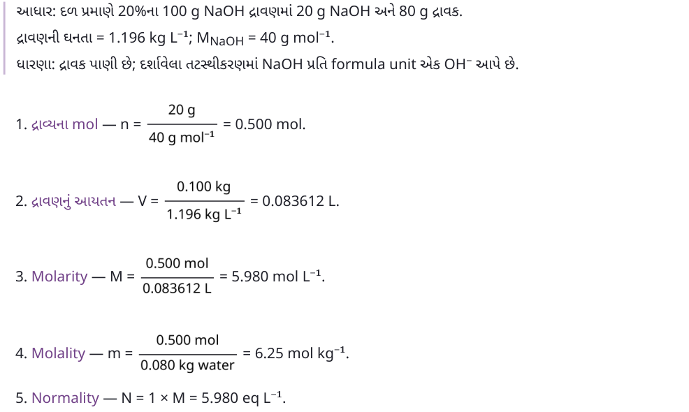
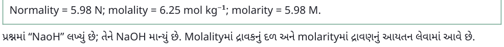
Question 4
Q4 · Ideal gases and material balances
Q.4 (a) · Assuming air contain 79% N2 and 21 % O2 by volume, Calculate the density of air at NTP. · 3 marks
Given: 79 volume% N₂ and 21 volume% O₂; treat the gases as ideal.
NTP assumption: use T = 273.15 K and absolute P = 101.325 kPa.
MN₂ = 28, MO₂ = 32 kg kmol⁻¹; R = 8.314 kPa m³ kmol⁻¹ K⁻¹.
1. Volume equals mole fraction — yN₂ = 0.79; yO₂ = 0.21.
2. Mean molar mass — M̄ = 0.79(28) + 0.21(32) = 28.84 kg kmol⁻¹.
Air density ≈ 1.287 kg m⁻³ under the stated NTP assumption.
NTP conventions vary. If 20 °C and 101.325 kPa are meant instead, the same calculation gives approximately 1.199 kg m⁻³.
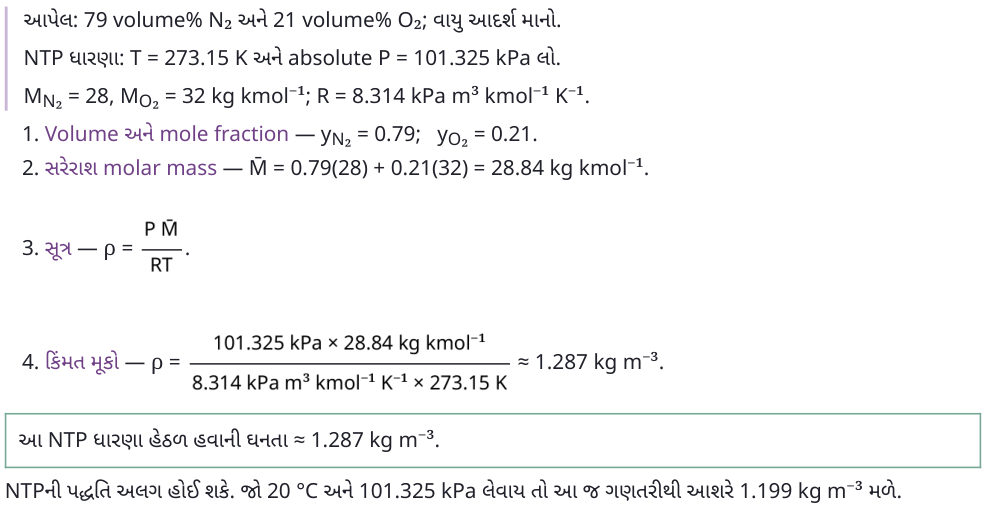
Q.4 (b) · Explain Material Balance equation for Evaporation · 4 marks
For evaporation, F is feed, V vapour and P concentrated product. Let H be the mass held inside the unit, x its component mass fraction, and xstream the same component’s mass fraction in each stream. Flows are mass rates.
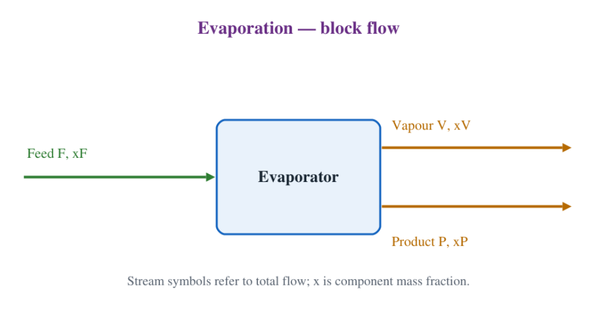
Evaporation block flow with labelled feed and products.
Without chemical reaction, the general balances including accumulation are:
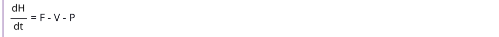
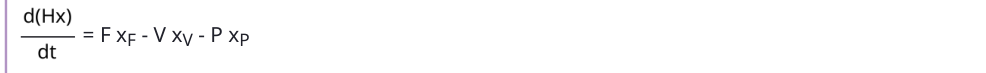
At steady state accumulation is zero, giving:
F = V + P; F xF = V xV + P xP
For a nonvolatile solute, xᵥ ≈ 0; otherwise retain the vapour component term.
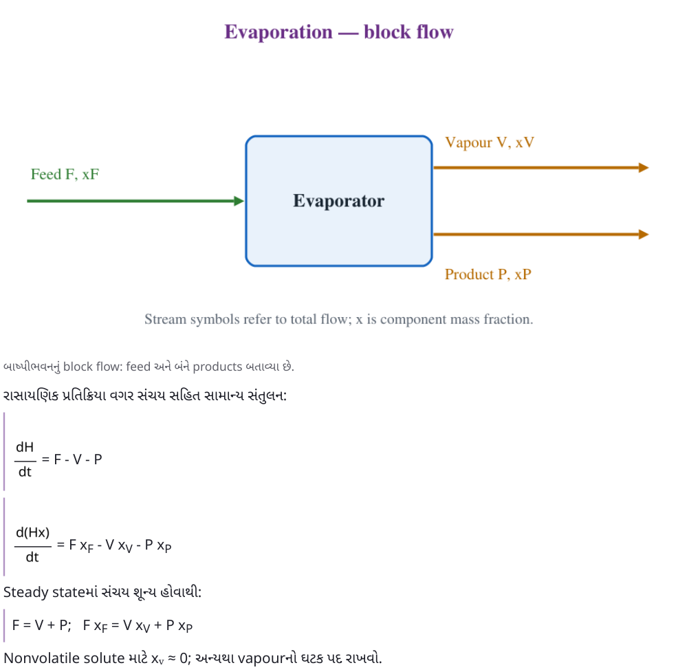
Q.4 (c) · Prove that Volume % = Mole % = Pressure %. · 7 marks
For an ideal-gas mixture, let component i contain nᵢ moles, total moles n, total pressure P and total volume V at common T. Define its partial volume Vᵢ at the same T and P and its partial pressure pᵢ at the same T and V.
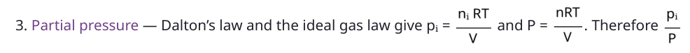
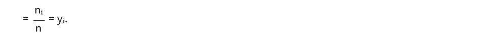
4. Convert to percent — Multiply each fraction by 100.
Volume % = mole % = partial-pressure %
This equality assumes ideal gases and volumes compared at the same temperature and pressure; it is not generally exact for non-ideal mixtures.
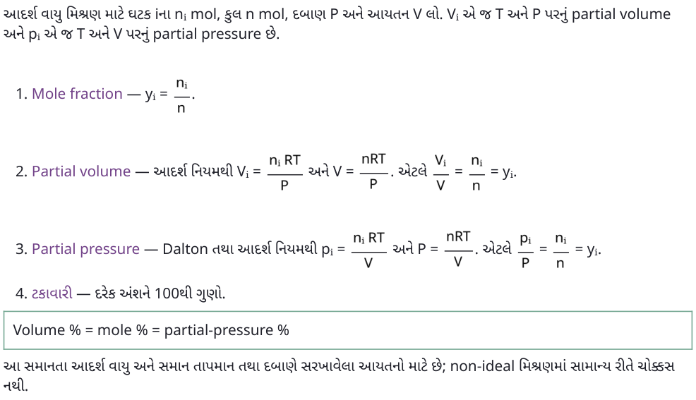
Q.4 (a) · Derive Ideal gas equation . · OR · 3 marks
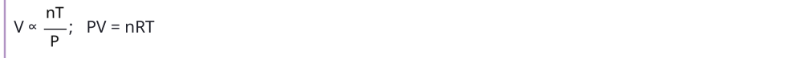
Use absolute pressure and kelvin temperature. This is an ideal-gas approximation.
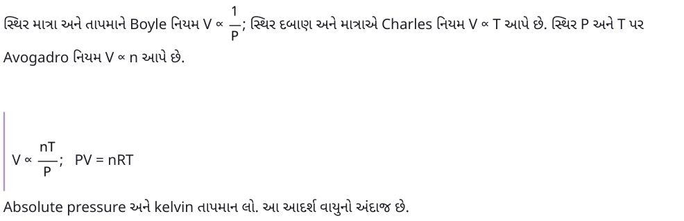
Q.4 (b) · Explain Material Balance equation for Mixing · OR · 4 marks
F₁ and F₂ are feed mass rates, M is mixed-product mass rate, and x₁, x₂ and xM are mass fractions of the same component. H is material held in the mixer and x its component fraction.

Two feed streams enter a mixer; one mixed stream leaves.
For no reaction, the general balances including accumulation are:
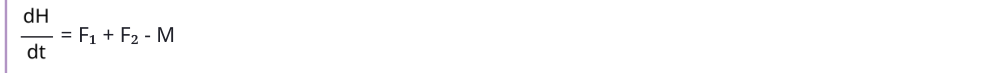
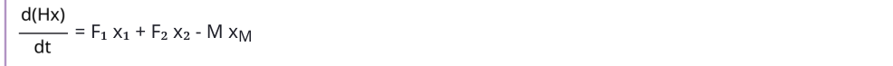
At steady state the accumulation terms vanish:
F₁ + F₂ = M; F₁ x₁ + F₂ x₂ = M xM
The component balance applies separately to each conserved component.
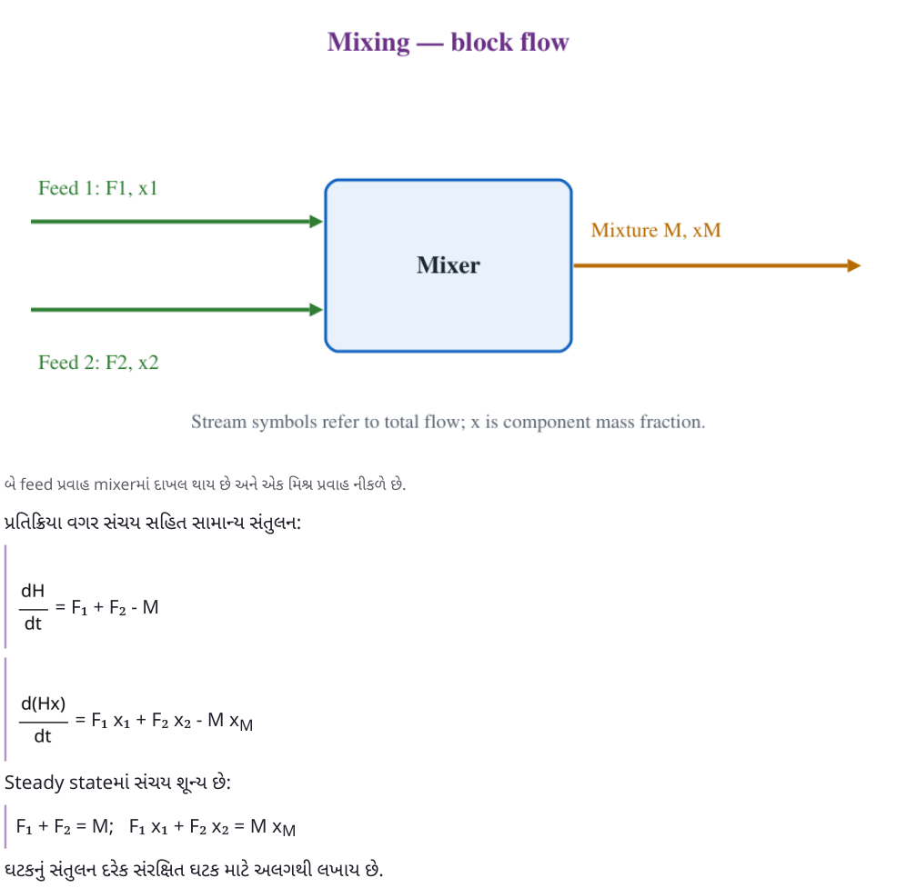
Q.4 (c) · A mixture of CH4 and C2H6 has density 1.0 kg/m3 at 273 K and 101.325 kPa pressure.Calculate the mole % and weight % of CH4 and C2H6 in the mixture. · OR · 7 marks
Given: ρ = 1.0 kg m⁻³, T = 273 K and absolute P = 101.325 kPa.
For ideal gases, MCH₄ = 16 and MC₂H₆ = 30 kg kmol⁻¹.
R = 8.314 kPa m³ kmol⁻¹ K⁻¹. Let y be the methane mole fraction.
3. Mixture equation — 22.4004 = 16y + 30(1 − y).
6. Ethane mass fraction — wC₂H₆ = 1 − 0.38773 = 0.61227.
Mole: CH₄ 54.28%, C₂H₆ 45.72%. Mass: CH₄ 38.77%, C₂H₆ 61.23%.
The mean molar mass lies between 16 and 30 kg kmol⁻¹, and each pair of percentages sums to 100%.
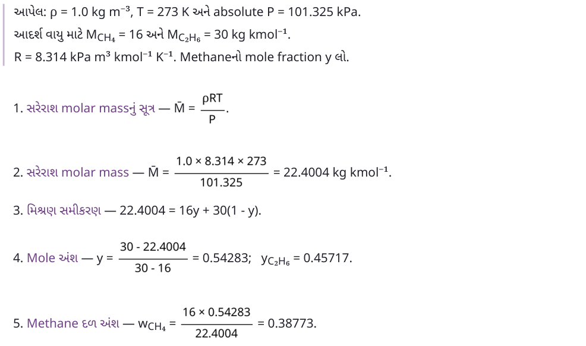
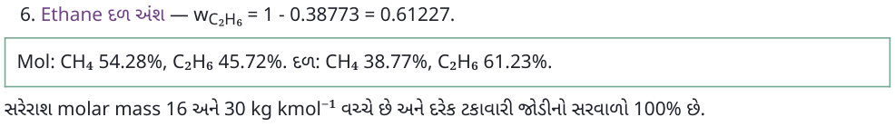
Question 5
Q5 · Energy, balances and phase-equilibrium laws
Q.5 (a) · Define Potential energy with units and formula. · 3 marks
Gravitational potential energy is energy due to position relative to a chosen reference level.
Ep = mgh
Here m is mass in kg, g is gravitational acceleration in m s⁻² and h is height in m. SI unit: joule (J); change the reference and the zero changes.
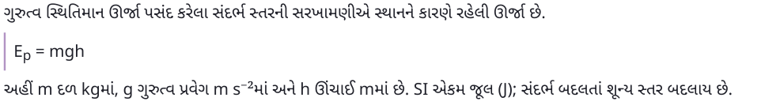
Q.5 (b) · Explain Material Balance equation for Expeller · 4 marks
For oil expelling, F is oilseed feed, O expelled oil and C press cake. Let H be the mass held inside the unit, x its component mass fraction, and xstream the same component’s mass fraction in each stream. Flows are mass rates.
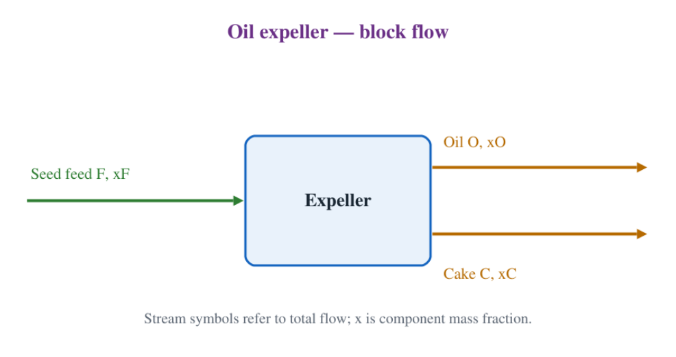
Oil expelling block flow with labelled feed and products.
Without chemical reaction, the general balances including accumulation are:
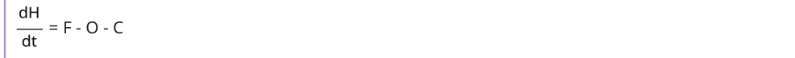
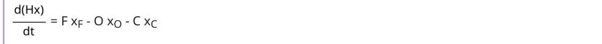
At steady state accumulation is zero, giving:
F = O + C; F xF = O xO + C xC
If x is the oil mass fraction and expelled oil is pure, xₒ ≈ 1; the cake can contain residual oil.
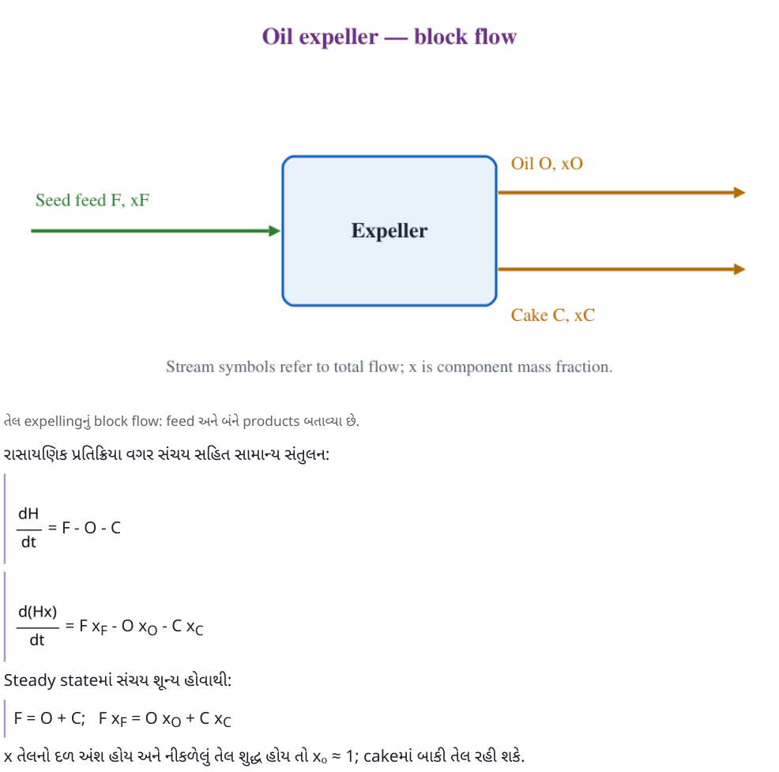
Q.5 (c) · Explain average molecular weight of gas mixture and density of gas mixture. · 7 marks
Mean molar mass is total mass per total molar amount. For gas mole fractions yᵢ and molar masses Mᵢ:
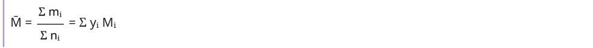
For an ideal gas, PV = nRT and m = n M̄ , so density is:
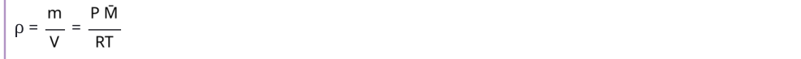
For example, 79 mol% N₂ and 21 mol% O₂ have M̄ = 0.79(28) + 0.21(32) = 28.84 kg kmol⁻¹. Use absolute pressure and kelvin.
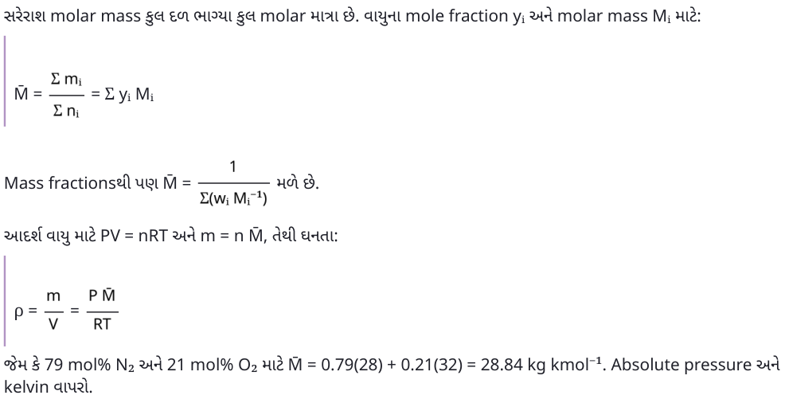
Q.5 (a) · Define Kinetic energy with units and formula. · OR · 3 marks
Kinetic energy is energy due to motion relative to a reference frame.
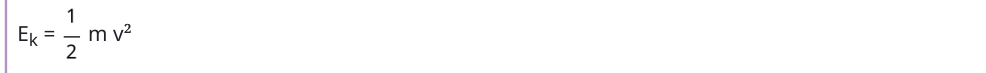
m is mass in kg and v is speed in m s⁻¹. SI unit: joule (J); doubling speed multiplies kinetic energy by four.
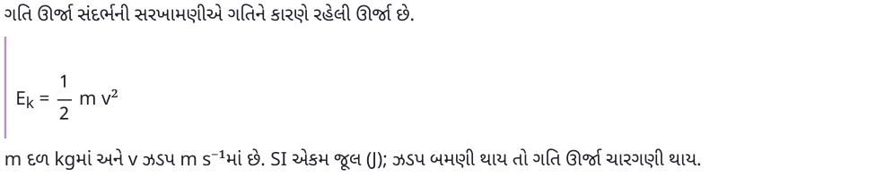
Q.5 (b) · Explain Material Balance equation for Distillation. · OR · 4 marks
For distillation, F is feed, D distillate and B bottoms. Let H be the mass held inside the unit, x its component mass fraction, and xstream the same component’s mass fraction in each stream. Flows are mass rates.

Distillation block flow with labelled feed and products.
Without chemical reaction, the general balances including accumulation are:

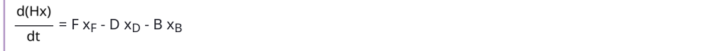
At steady state accumulation is zero, giving:
F = D + B; F xF = D xD + B xB
Volatile-component fractions need not be pure.


Q.5 (c) · Explain Raoult's law with limitation. and Henry's law with limitation. · OR · 7 marks
Raoult’s law: for an ideal liquid solution and approximately ideal vapour, the equilibrium partial pressure of volatile component i equals its liquid mole fraction times the pure-component vapour pressure at the same temperature.
pᵢ = xᵢ Pᵢ*
Limit: strong molecular interactions, non-ideal liquid mixtures or high-pressure vapour cause deviations.
Henry’s law: in the dilute limit at fixed temperature, a dissolved gas has partial pressure proportional to its liquid mole fraction.
pᵢ = Hᵢ xᵢ
Limit: the constant is temperature- and convention-dependent; the dilute approximation can fail for reactions, high concentrations or high pressures.
Raoult’s law uses the pure-liquid standard state; Henry’s law uses the dilute-solute limit.